Părintele știe în fiecare moment ce se întâmplă la curs
Nu așteptați ședința cu părinții ca să aflați cum merge. Întrebați oricând și primiți răspuns concret: ce s-a lucrat la ultima ședință, ce a înțeles și ce urmează.
Pregătire individuală sau în grupe de maximum trei elevi, cu un raport de progres la finalul fiecărei luni. Știți exact unde e copilul și ce urmează, nu la sfârșitul anului, ci luna asta.
Prima ședință durează 50 de minute: ne cunoaștem, stabilim obiective și stabilim rezonanța. Nu costă nimic.
Video de prezentare
Patru minute filmate într-o grupă obișnuită de clasa a XII-a. Fără scenariu și fără actori, exact ritmul în care se lucrează.
Cum lucrăm
Nu promitem note. Promitem că veți ști în fiecare lună unde e copilul, ce a înțeles și ce nu, și că nimeni nu rămâne în urmă fără să observăm.
Nu așteptați ședința cu părinții ca să aflați cum merge. Întrebați oricând și primiți răspuns concret: ce s-a lucrat la ultima ședință, ce a înțeles și ce urmează.
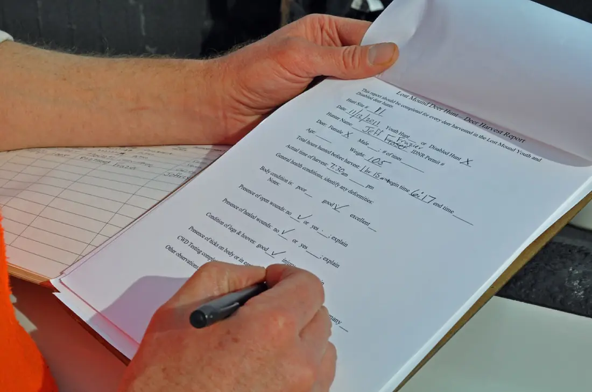
Un document scurt: ce s-a parcurs, procentul din programă, la ce capitole stă prost și ce facem luna următoare. Ajunge la părinte, nu doar la elev.
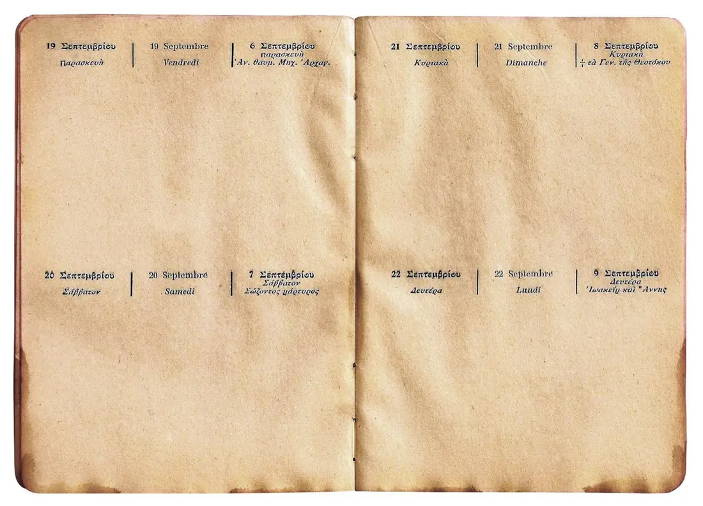
Ședința la care elevul nu a putut ajunge se reprogramează în aceeași săptămână sau se recuperează online. Nu se șterge din abonament.
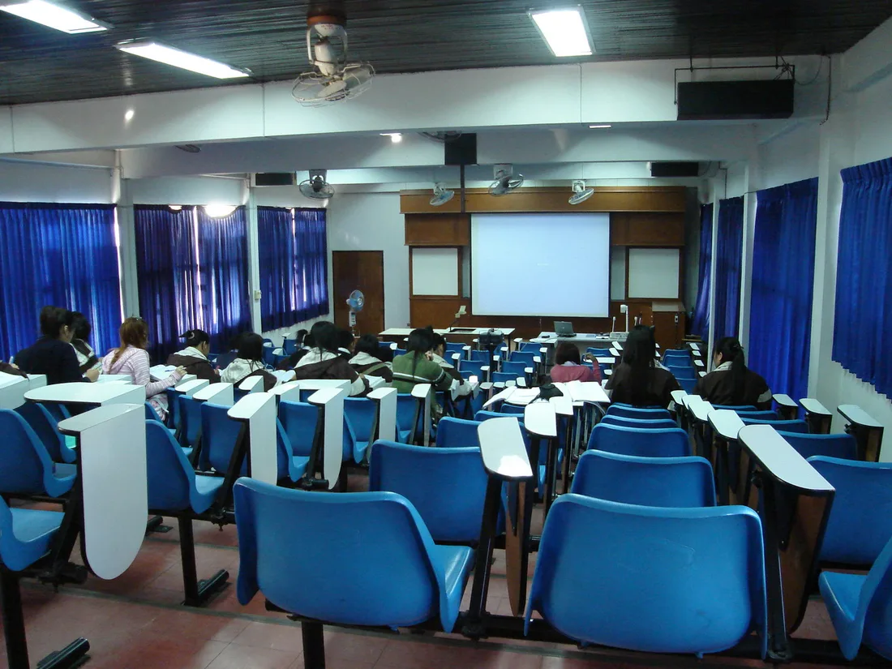
Pentru grupele de Bacalaureat, cu timp cronometrat și barem oficial. Nota din simulare intră în raport, ca să se vadă evoluția, nu impresia.
Ce se predă
Pregătire pentru Evaluarea Națională și Bacalaureat, plus limbi străine, de la engleză la coreeană.
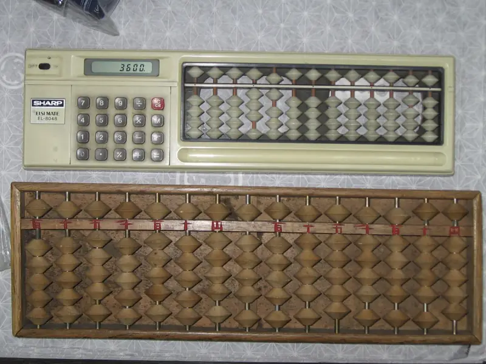
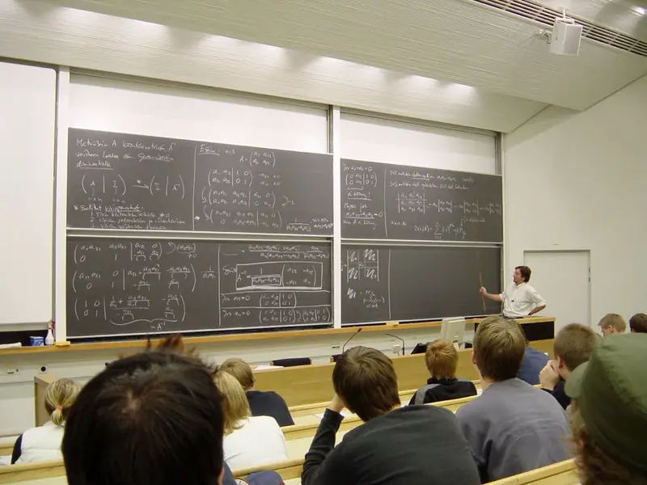
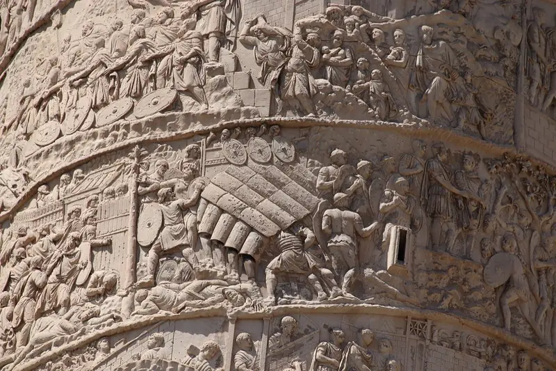
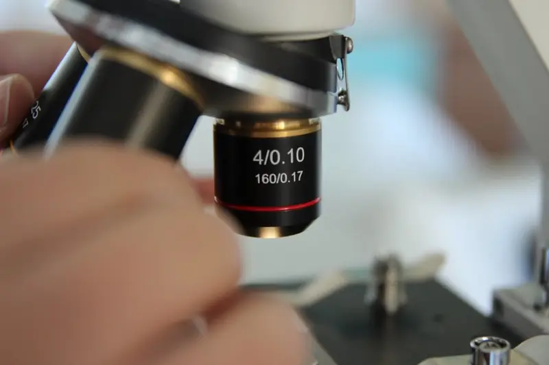
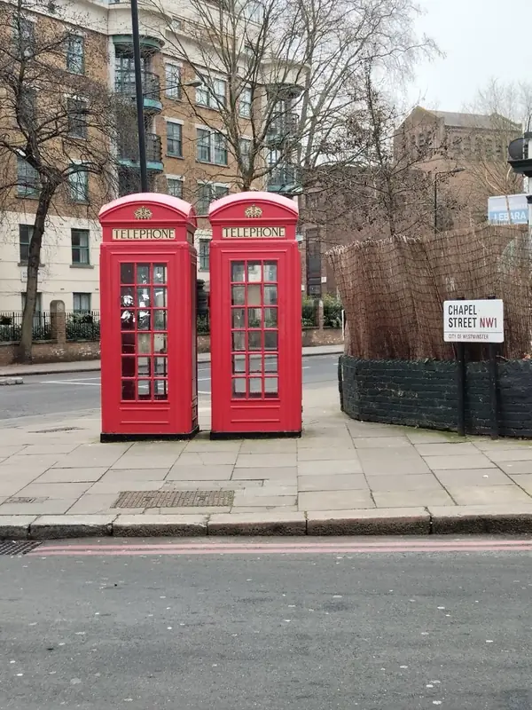
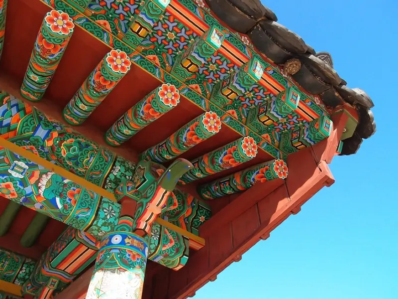
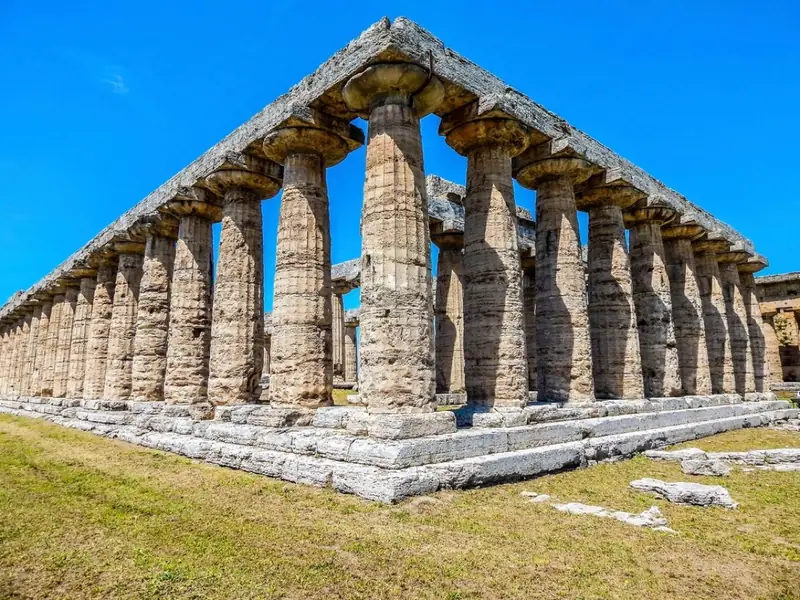
Dincolo de programă
Nu se dă examen la ele și nu se trec în catalog. Se iau separat, la orice vârstă, de obicei în paralel cu pregătirea pentru examen.
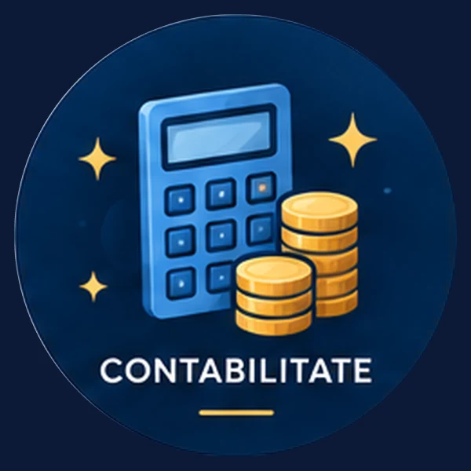
Ce spun părinții
A intrat cu 6.40 la simulare și a ieșit din Bacalaureat cu 8.75. Diferența a făcut-o faptul că am știut în fiecare lună unde stă, nu abia la final.
Fiul meu ura matematica. Nu l-au făcut s-o iubească, dar l-au făcut s-o înțeleagă, iar la Evaluare a luat 9.15. Pentru noi asta a însemnat totul.
Ce m-a convins a fost raportul lunar. E primul loc unde nu a trebuit să întreb eu ce se întâmplă. Mi se spunea înainte să apuc.
Grupa de trei chiar înseamnă trei. Am verificat. Fata mea vorbește la fiecare ședință, nu se ascunde în spatele clasei ca la școală.
De înlocuit înainte de publicare. Recenziile de mai sus sunt exemple de așezare în pagină, nu recenzii primite. La fel și cifrele din capul paginii. Firma a fost înregistrată în noiembrie 2025, deci prima promoție prin care a trecut e cea din iunie 2026.
Întrebări frecvente
Maximum trei, niciodată mai mulți. Nu e o formulare de marketing: dacă al patrulea vrea aceeași oră, se deschide altă grupă. La trei, fiecare elev vorbește la fiecare ședință.
Ședința se reprogramează în aceeași săptămână sau se recuperează online. Nu se șterge din abonament și nu se pierde.
Un document scurt: ce s-a parcurs, procentul din programă, la ce capitole stă prost și ce se face luna următoare. Ajunge la părinte, nu doar la elev. Pentru grupele de Bacalaureat intră în el și nota din simulare, ca să se vadă evoluția, nu impresia.
Durează 50 de minute, nu costă nimic și nu obligă la nimic. Nu e o lecție: ne cunoaștem, stabilim obiective și stabilim rezonanța. Abia după ea se discută dacă și cum se continuă.
Șaisprezece materii pentru Evaluarea Națională și Bacalaureat, de la română și matematică până la coreeană, plus cinci cursuri care nu țin de programă: Excel, contabilitate, dicție, dezvoltare personală și educație financiară.
La . Program: . Ședințele de recuperare se pot ține și online.
De confirmat înainte de publicare. Răspunsurile de mai sus sunt scrise din ce spune deja site-ul. Nu conțin nimic despre prețuri, contract sau durata angajamentului, fiindcă acele date nu există încă.
Programare
Nu faceți nimic pe încredere: spuneți-ne vârsta, materia și dacă preferați singur sau în grupă, iar la capăt vă spunem cine predă și deschidem conversația pe WhatsApp. Prima ședință durează 50 de minute, nu costă nimic și nu obligă la nimic: ne cunoaștem, stabilim obiective și stabilim rezonanța.